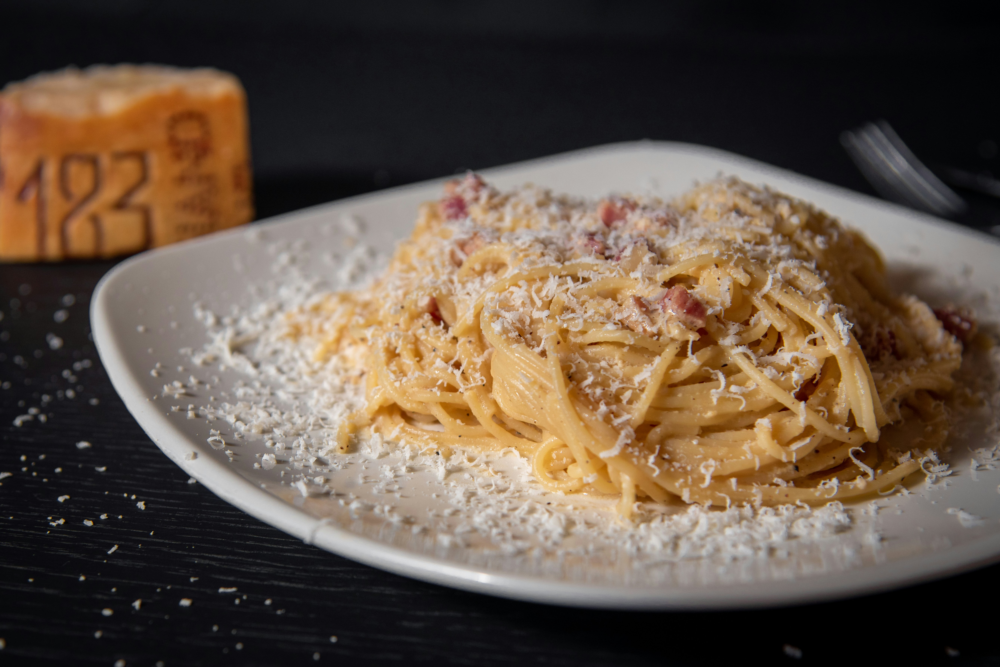
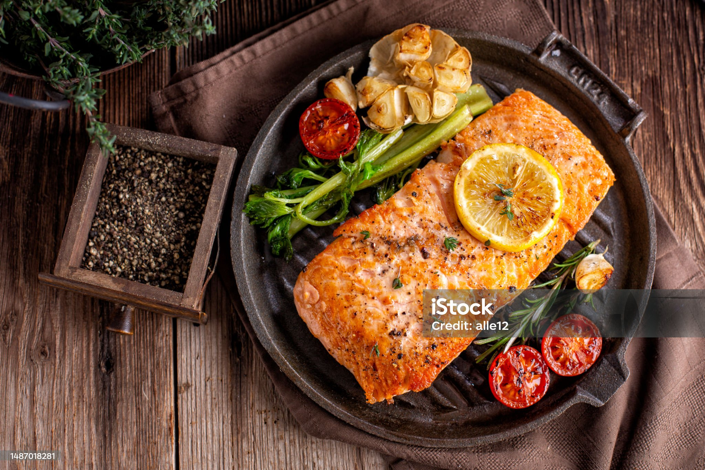

Spaghetti Carbonara
Description
A classic Italian pasta dish made with eggs, cheese, pancetta, and pepper. Creamy, rich, and full of flavor, it’s a simple yet elegant meal.
Total Time: 20 minutes
Servings: 2
Best Pasta for Carbonara
Traditional carbonara is best made with spaghetti, but you can also use rigatoni or fettuccine for a slight variation.
Ingredients
- 200g spaghetti
- 100g pancetta (or guanciale), diced
- 2 large eggs
- 1/2 cup grated Pecorino Romano (or Parmesan)
- 1/2 tsp black pepper
- Salt, to taste
- 1 tbsp olive oil (optional)
Instructions
- Cook the pasta – Boil spaghetti in salted water until al dente. Reserve 1/2 cup pasta water, then drain.
- Prepare the pancetta – In a pan over medium heat, cook pancetta until crispy. Remove from heat.
- Mix the sauce – In a bowl, whisk eggs, cheese, and black pepper until combined.
- Combine – Add drained pasta to the pan with pancetta, then slowly mix in the egg mixture, tossing quickly to create a creamy sauce. Use reserved pasta water to adjust consistency if needed.
- Serve – Top with extra cheese and black pepper. Serve immediately.
Tips & Variations
- Use guanciale instead of pancetta for authentic flavor.
- Never add cream—carbonara gets its creaminess from eggs and cheese.
- Work quickly when mixing to prevent the eggs from scrambling.

Grilled Salmon
Description
A simple yet flavorful dish with salmon fillets grilled to perfection. Lightly seasoned, crisp on the outside, and tender inside.
Total Time: 20 minutes
Servings: 2
Best Fish for Grilling
Wild-caught salmon like King, Sockeye, or Coho has a firm texture and rich flavor, ideal for grilling.
Ingredients
- 2 salmon fillets (6 oz each)
- 1 tbsp olive oil
- 1 tsp salt
- 1/2 tsp black pepper
- 1/2 tsp garlic powder
- 1/2 tsp smoked paprika
- 1 tbsp fresh lemon juice
- 1 tsp dried or fresh herbs (dill, parsley)
- Lemon wedges for serving
Instructions
- Prepare the salmon – Pat dry, brush with oil, and season both sides.
- Preheat the grill – Medium-high heat, lightly oil the grates.
- Grill – Place skin-side down, cook 4-5 minutes, flip, and cook 3-4 minutes until opaque.
- Serve – Let rest, garnish with lemon and herbs.
Tips & Variations
- Use a cedar plank for a smoky flavor.
- Marinate for 30 minutes for deeper taste.
- Pair with grilled vegetables or salad.

Recipes
Main Courses
Appetizers
Desserts